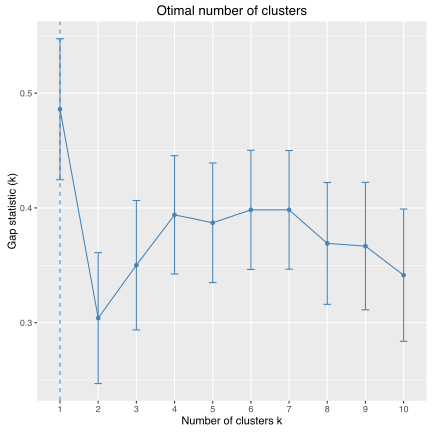
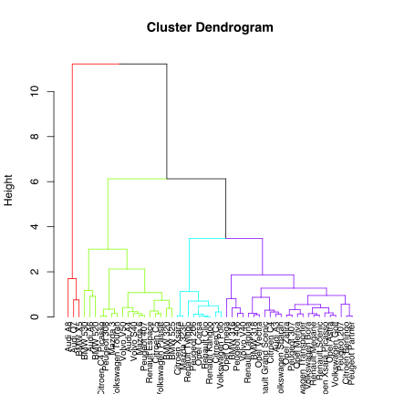
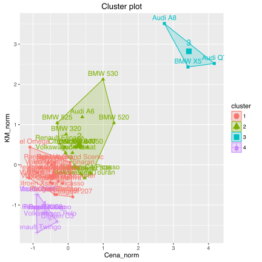
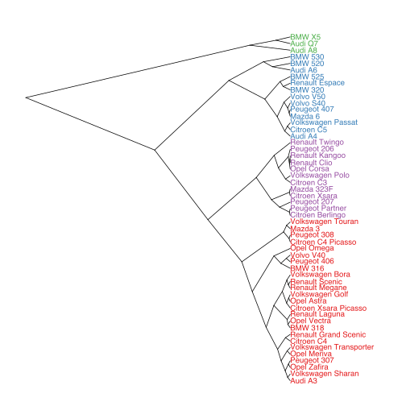

Jak przeprowadzić grupowanie/partycjonowanie hierarchiczne?
Metoda k-średnich i k-medoidów wyznaczała podział zbioru obiektów na rozłącznych grup. Wybór jest istotny a wyniki dla i mogą być bardzo różne.
Innym podejściem do analizy grup jest budowa grup w sposób hierarchiczny, tak by nowe grupy brały się z podziały już wybranych grup. Taki sposób konstrukcji grup prowadzi do hierarchicznej reprezentacji grup, która z reguły jest przedstawiana graficznie za pomocą drzewa.
Hierarchię grup można budować na różne sposoby, trzy najbardziej naturalne to:
- podejście ,,z dołu do góry'' hierarchii (aglomeracyjne, ang. bottom up, agglomerative), rozpoczyna się od pojedynczych obserwacji a następnie łączy się je w coraz większe grupy,
- podejście ,,z góry do dołu'' (ang. top down, divisive), rozpoczyna się od jednej grupy zawierającej wszystkie obiekty i dzieli się ją na podgrupy,
- podejście rozpoczynające od ,,środka'' - określonej liczby grup, a następnie postępowanie w obie strony, dzielenie tych grup na mniejsze i łączenie startowych grup w większe.
Najczęściej stosowaną strategią jest strategia z dołu do góry i to tę opiszemy poniżej szerzej.
Algorytm budowania hierarchicznej struktury grup jest następujący:
- Rozpocznij od zbioru jednoelementowych grup - każdy obiekt jest osobną grupą.
- Znajdź dwie najbliższe grupy, połącz je w jedną grupę.
- Wyznacz odległości pomiędzy nową grupą a wszystkimi pozostałymi.
- Powtarzaj kroki 2-3 dopóki nie pozostanie tylko jedna grupa.
Kluczowe są w tym algorytmie dwa kroki.
- Pierwszy - wymaga on określenia macierzy odległości pomiędzy wszystkimi parami obiektów. Do wyznaczania tej macierzy odległości można użyć dowonej odległości. Wybór odległości jest bardzo ważny więc warto poświęcić mu więcej uwagi.
- Trzeci - wymaga on określenia reguły wyznaczania odległości pomiędzy nową grupą a pozostałymi.
Metoda łączenia grup, ang. linkage
W jaki sposób wyznaczyć odległość pomiędzy grupą a nowo utworzoną grupą (otrzymaną przez połączenie grup i )?
Częste wybory to:
- pełne łączenie (ang. complete)
- pojedyncze łączenie (ang. single)
- średnie łączenie (ang. average)
- łączenie Warda (od nazwiska konstruktora: Joe Warda, ang. the minimum variance criterion), pamiętajmy, że , Ta metoda jest często wykorzystywana w oparciu o kwadrat odległości Euklidesowej, co prowadzi do tworzenia grup minimalizujących wewnątrzgrupową wariancję. Często te grupy mają bardziej zrównoważone wielkości (pożądana cecha), co z kolei powoduje, że ta metoda jest często wykorzystywana.
Przykład
Podobnie jak dla algorytmu k-średnich i k-medoidów poniższą analizę grup przeprowadzimy na wybranych 57 modelach aut, opierając się na zbiorze danych auta2012 z pakietu PogromcyDanych. Policzyliśmy wcześniej na podstawie dwuletnich ofert, średnią cenę, przebieg, pojemność silnika, liczbę koni mechanicznych i frakcję aut z silnikiem diesla.
Przedstawione poniżej wyniki będą oparte o odległość Euklidesową dla standaryzowanych wartości pierwiastka z ceny i mocy silnika.
auta <- archivist::aread("pbiecek/Przewodnik/arepo/bf2846de03bc8434d234b08fd2e31694")
auta$nazwa <- rownames(auta)
auta$Cena_norm <- scale(sqrt(auta$Cena))
auta$KM_norm <- scale(sqrt(auta$KM))
odleglosci <- dist(auta[,c("Cena_norm", "KM_norm")], method = "manhattan")
as.matrix(odleglosci)[1:5,1:5]
## Audi A3 Audi A4 Audi A6 Audi A8 Audi Q7
## Audi A3 0.0000000 0.7184849 1.888609 6.550862 6.980737
## Audi A4 0.7184849 0.0000000 1.170124 5.832377 6.262252
## Audi A6 1.8886091 1.1701242 0.000000 4.662253 5.092128
## Audi A8 6.5508616 5.8323767 4.662253 0.000000 2.415564
## Audi Q7 6.9807367 6.2622518 5.092128 2.415564 0.000000
Przedstawmy analizę hierarchii w oparciu o metodę łączenia Warda.
Wykonamy ją funkcją agnes() z pakietu cluster.
library(cluster)
grupy <- agnes(odleglosci, method = "ward")
Wynikiem jest obiekt klasy agnes, który można przedstawić graficznie w postaci dendrogramu. Wykorzystamy w tym celu funkcję fviz_dend() z pakietu factoextra, która ma kilka zalet w stosunku do standardowej funkcji plot(), mianowicie umożliwia zaznaczenie graficzne wybranej liczby grup (poniżej 4).
Z dendrogramu możemy odczytać jak podobne są poszczególne obserwacje / grupy do innych obserwacji / grup.
library(factoextra)
fviz_dend(grupy, k = 4, rect = TRUE, main = "Metoda Ward")

A jak wyglądałyby te dendrogramy dla innych metod łączenia?
grupy_complete <- agnes(odleglosci, method = "complete")
fviz_dend(grupy_complete, k = 4, rect = TRUE, main = "Metoda complete")

grupy_single <- agnes(odleglosci, method = "single")
fviz_dend(grupy_single, k = 4, rect = TRUE, main = "Metoda single")

grupy_average <- agnes(odleglosci, method = "average")
fviz_dend(grupy_average, k = 4, rect = TRUE, main = "Metoda average")

Jak widzimy wyglądają bardzo różnie. Grupy znalezione metodą Warda mają zbliżone wielkości co czasem jest zaletą.
Funkcja agnes() wyznacza dendrogram, gdybyśmy chcieli z niego wydobyć informację jak wygląda przyporządkowanie do grup na określonym poziomie drzewa, możemy je wyłuskać stosując funkcję cutree().
# określona liczba grup
cutree(grupy, k = 4)
## [1] 1 2 2 3 3 1 1 2 2 2 2 3 4 4 1 1 2 4 1 1 4 2 1 4 1 1 1 1 4 4 1 1 1 2 4
## [36] 4 2 1 4 1 1 1 4 1 1 2 4 1 1 1 2 1 2
Jak wyglądają te cztery grupy na wykresie?
auta$grupa = factor(cutree(grupy, k = 4))
ggplot(auta, aes(Cena, KM, label=nazwa, color=grupa)) +
geom_point(size=3) + theme_bw() +
coord_trans("sqrt", "sqrt")

Na jakiej wysokości podzielić drzewo?
Do wyboru liczby grup (i dla analizy hierarchicznej i dla k-średnich, k-medoidów) wykorzystać możemy statystykę gap-statistic.
grupy_eclust <- eclust(auta[,c("Cena_norm", "KM_norm")], "hclust", graph = FALSE)
## Clustering k = 1,2,..., K.max (= 10): .. done
## Bootstrapping, b = 1,2,..., B (= 100) [one "." per sample]:
## .................................................. 50
## .................................................. 100
fviz_gap_stat(grupy_eclust$gap_stat)

Wygląda na to, że wartość 4 nie jest taka zła. Jak wyglądają te cztery grupy?
grupy_eclust <- eclust(auta[,c("Cena_norm", "KM_norm")], "hclust", k = 4)

fviz_cluster(grupy_eclust)

Nie tylko drzewo
Używając pakietu ape można wykorzystać przeciążoną funkcję plot() dla obiektu klasy phylo, aby na różne sposoby przedstawiać dendrogramy.
library(RColorBrewer)
library(ape)
cols <- brewer.pal(4,"Set1")
hc <- as.phylo(as.hclust(grupy))
par(mar=c(1,1,2,1), xpd=NA)
plot(hc, type = "fan", cex = 0.8,
tip.color = cols[auta$grupa])

plot(as.phylo(hc), type = "unrooted", cex = 0.8,
tip.color = cols[auta$grupa])

plot(as.phylo(hc), type = "radial", cex = 0.8,
tip.color = cols[auta$grupa])

plot(as.phylo(hc), type = "cladogram", cex = 0.8,
tip.color = cols[auta$grupa])

I co dalej?
- Aby wykonać grupowanie hierarchiczne strategią z góry do dołu, można wykorzystać funkcję
diana()z pakietucluster(nazwa pochodzi od DIvisive ANAlysis Clustering).